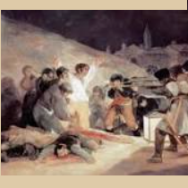
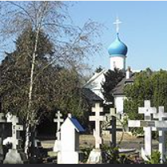
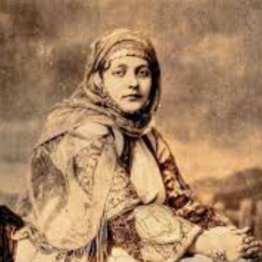

2. До три ми пушки пукнале
Trois coups de feu ont retenti
(Деcета Руковет - 10ème guirlande : 02:00 - 03:44) )
 "L'orphelin" - Uroš Predič (1857-1953) |
   |
|
|
|
 Version Mokranjac |
 Do tri puški puškaja (rythme: 4/4) |
 Do tri puški puškaja (rythme: 7/8) |
 Do tri puški puškaja (rythme: 2/4) |
NOTES
| [1] Нисам нашао никакво објашњење за ову песму, осим што се пева на најмање 3 мелодије са различитим ритмовима: 4/4, 7/8; 2/4. Сви имају мање-више изражен оријентални карактер. Интерпретација ове песме групе „Македонски мерак” је она која је представљена на свим спотовима на интернету. Назив ове групе радије би требало да буде „македонска мера“ = ритам 7/8, који Мокрањац, изгледа, није желео да задржи у својим „класичним“ транспозицијама. |
 Le Groupe "Makedonski Merak" Interprète la version "7/8" |
[1] Je n'ai pas trouvé d'explications concernant ce chant, si ce n'est qu'il se chante sur au moins 3 mélodies avec des rythmes différents: 4/4, 7/8; 2/4. Elles ont toute un caractère oriental plus ou moins marqué. L'interprétation de ce chant par le groupe "Makedonski merak" est celle présentée sur toutes les vidéos sur Internet. Le nom de ce groupe pourrait être plutôt "Makedonska mera", "Mesure macédonienne", à savoir le rythme 7/8, que Mokranjac ne semble pas avoir voulu conserver dans ses transpositions "classiques". |